Caso de caída de ceniza
1.- No humedecer la ceniza a fin de evitar taponamientos en el sistema de alcantarillado
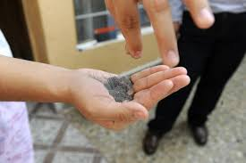
2.- Mantén la calma.
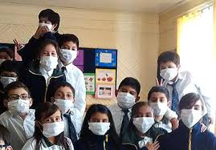
3.- Utiliza medios electrónicos y de comunicación para obtener información confiable que den las autoridades de Protección Civil sobre la caída de ceniza y atiende siempre sus instrucciones.
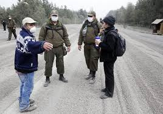
4.- No realices actividades al aire libre y si es posible no salgas.
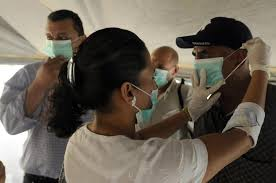
5.- Cierra puertas y ventanas y coloca toallas o trapos húmedos en las rendijas.
6.- Si tienes que salir cúbrete con un pañuelo o tapabocas, limpia ojos y garganta con agua pura.
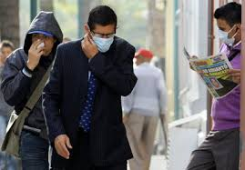
7.-Para los ojos, usa lentes protectores, especialmente si usas lentes de contacto.
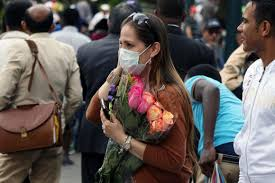
8.- Ten a la mano una linterna y pilas.
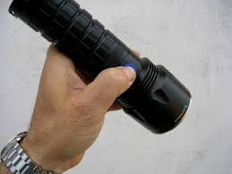
9.- La ceniza volcánica puede ser resbaladiza, sobre todo cuando está mojada. Toma las precauciones necesarias.
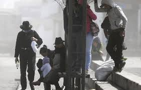
10.- Cubre tinacos, cisternas y depósitos de agua.
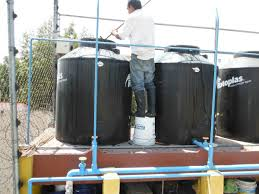
11.- Barre y retira la ceniza de techos, azoteas, patios y calles, deposítalas en bolsas y no permitas que se vaya al drenaje.
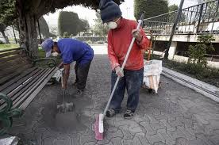
Caso de Erupción
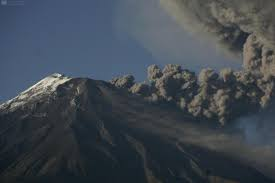
Una erupción volcánica puede ser un acontecimiento impresionante y destructivo. A continuación se indican varios consejos para evitar el peligro y saber qué hacer si te sorprende una erupción
Consejos de seguridad:
Mantente alejado de volcanes activos.
Si vives cerca de un volcán activo, prepara un kit de emergencia que incluya gafas de seguridad, una máscara, una linterna y una radio en buen estado que funcione con pilas.
Elabora una ruta de evacuación y ten el depósito de gasolina del coche siempre lleno.
Evacua siguiendo las recomendaciones de las autoridades para no encontrarte lava y barro, así como rocas y escombros que puede arrojar el volcán.
Evita zonas de ríos y regiones bajas.
Antes de abandonar tu casa, ponte una camisa de manga larga y pantalones largos; usa gafas de seguridad o normales, sin lentillas. Ponte una máscara de emergencia o envuélvete la cara con un paño húmedo.
Si no vas a evacuar, cierra puertas y ventanas, y bloquea la chimenea y otros puntos de ventilación para evitar que la ceniza entre en la casa.
Ten en cuenta que la ceniza puede sobrecargar el tejado y puedes necesitar retirarla. Durante la limpieza, lleva elementos de protección
La ceniza puede dañar motores y piezas metálicas, así que evita conducir. Si debes conducir, no superes los 55 kilómetros por hora.
¿Qué estados afectarían?
Es dificíl conocer por adelantado cuáles serían las zonas afectadas en caso de erupción. Se puede decir que si la lava saliera del lado norte o noreste, o este y sureste, el estado de Puebla se vería afectado. Si saliera del lado sur se vería afectado el estado de México y posiblemente el estado de Morelos, y si saliera del lado oeste y suroeste se vería afectada la región en donde se encuentra la población de Amecameca.
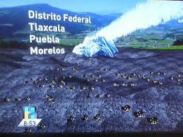